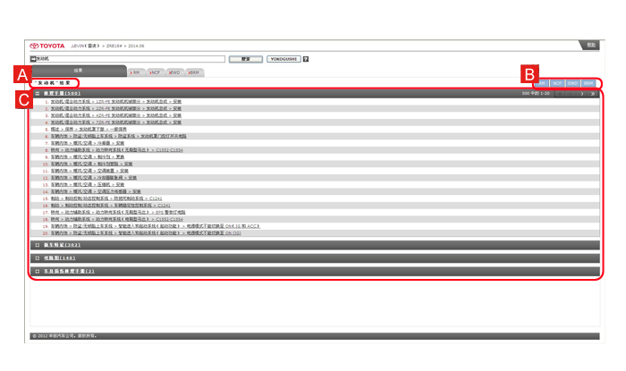

输入诊断码并点击 YOKOGUSHI。
显示 YOKOGUSHI 搜索结果。

提示
- 可使用五位诊断码进行 YOKOGUSHI 搜索。两位诊断码不可用于搜索。
- 诊断码只能使用字母、数字和符号“/”。
使用 YOKOGUSHI 时，输入诊断码即可在修理手册、新车特征和电路图中搜索相关信息。
输入诊断码并点击 YOKOGUSHI。 提示
|
点击要查看项目的链接。
|
关键词搜索和 YOKOGUSHI 搜索的结果在结果（搜索结果）标签中显示。点击所要查看项目的链接即可显示相应内容。

| A | 搜索结果标签 |
|---|---|
| B | 手册标签 显示各手册是否有搜索结果。 如果有一个或多个搜索结果，显示为蓝色；如果没有搜索结果，显示为白色。 |
| C | 搜索结果 搜索结果显示各手册中的搜索结果数目和搜索结果项目。 按顺序类别、章节、标题和内容显示项目。 |